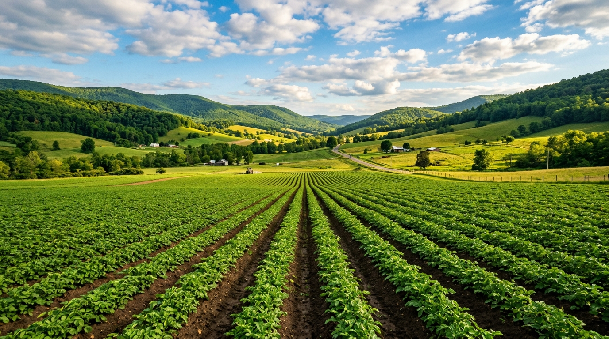
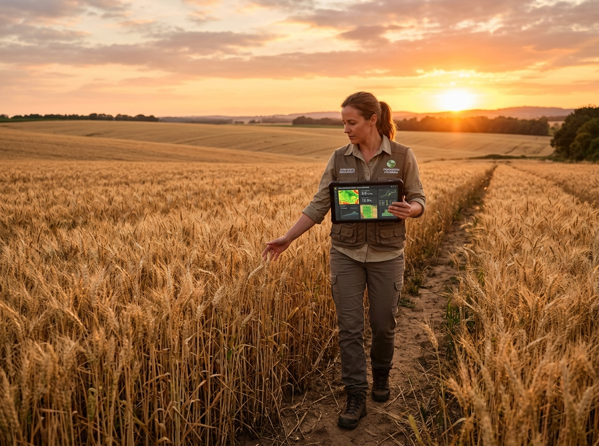

Turn weather, soil, crop health, and historical data into smarter yield predictions. Understand the factors behind every forecast and make more informed agricultural decisions.
Every forecast starts with a clearer understanding of the land.
Understand how rainfall, temperature, and seasonal conditions influence crop development.
Bring soil properties and vegetation indicators such as NDVI into the yield prediction workflow.

Compare model predictions, understand important features, and inspect evaluation results.
Enter the available field and seasonal information to generate an estimate using the configured prediction model.
Empirical verification, global feature importance, and dataset integrity metrics.
Real-time agronomic stress detection and rule-based low-yield threshold alerts.
Rainfall of 180.0 mm indicates critical meteorological drought during grain-filling phase.
Optimal vegetative development. GDD accumulation and soil moisture are within optimal harvest limits.